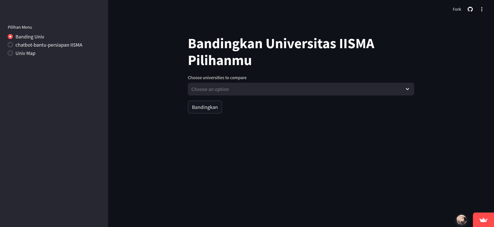
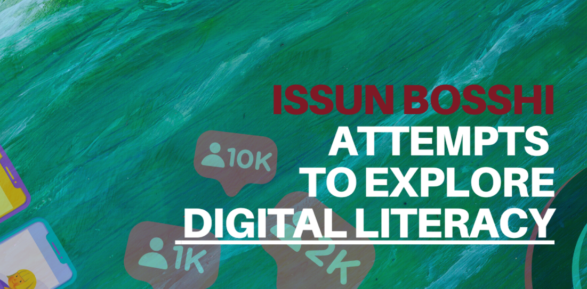

Project
IISMA Banding-Banding Univ
Project ini adalah project pertama saya yang saya buat dengan menggunakan Python dan Streamlit (Framework). Data saya dapat dari scrapping web IISMA Official. Project ini adalah project yang saya buat untuk membandingkan berbagai universitas dalam program IISMA.
ARIMA Emissions Prediction

Project ini adalah project kedua saya yang saya buat dengan menggunakan Python. Project ini adalah project yang saya buat untuk memprediksi emisi menggunakan model ARIMA. ARIMA (AutoRegressive Integrated Moving Average) adalah model statistik yang digunakan untuk menganalisis dan memprediksi data deret waktu. Dalam project ini, model ARIMA digunakan untuk memahami pola data emisi dan membuat prediksi yang akurat tentang emisi di masa depan.
Buku- Issun Boshi Attempts to Explore Digital Literacy
This project aims to explore the concept of digital literacy through the lens of the classic Japanese tale, Issun Boshi. By integrating traditional storytelling with modern digital tools, we hope to provide an engaging and educational experience for users of all ages.